SPIDER
متوفر
Spider T700 Elite 5G
جهاز SPIDER مميز مع خدمات متعددة وريموت بلوتوث.
5G · Bluetooth · IPTV
السعر
50 د.أ
اطلب الآن
نخدمكم بالفحيص وعمان الغربية والسلط والسرو
تواصل معنا
اختر الطريقة المناسبة لك: واتساب للاستفسار السريع، اتصال مباشر، فيس بوك، أو إيميل.
نخدمكم بالفحيص وعمان الغربية والسلط والسرو
صفحة مستقلة لعرض جميع الأجهزة مع الصور عالية الجودة، الأسعار، والتفاصيل. اضغط على صورة أي جهاز لتكبير البروشور وقراءة المعلومات كاملة.
جهاز SPIDER مميز مع خدمات متعددة وريموت بلوتوث.
5G · Bluetooth · IPTV
رسيفر 5G يدعم WiFi Mobile وخدمات مشاهدة متعددة.
5G · WiFi Mobile · PRO

رسيفر SPIDER اقتصادي ومميز مع خدمات IPTV متعددة، مناسب للمشاهدة اليومية والرياضية.
IPFOX · Speed · Sport · Turbo · MyHD

رسيفر SPIDER 5G بخدمات IPTV متعددة وتصميم ذهبي مميز مع دعم تطبيقات المشاهدة.
5G · IPTV · Speed · Sport · Mondial · MyHD
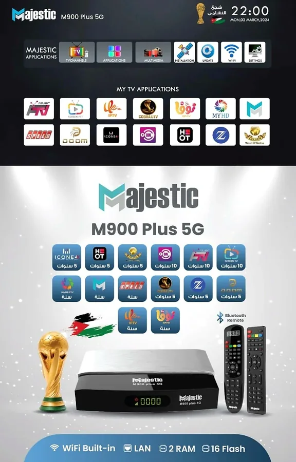
جهاز Majestic مع WiFi Built-in و LAN وذاكرة 2 RAM / 16 Flash.
WiFi · LAN · 2 RAM
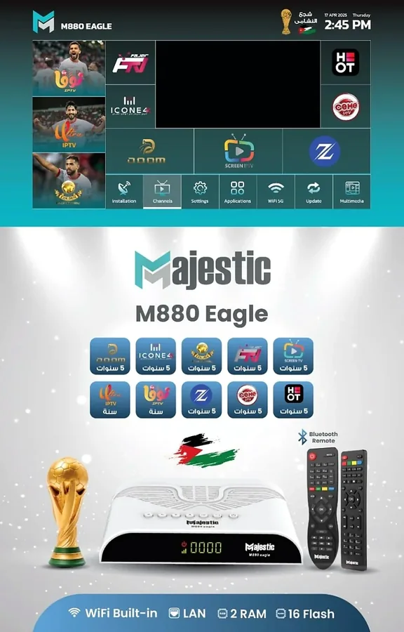
رسيفر بتصميم أبيض أنيق مع WiFi 5G وريموت بلوتوث.
WiFi 5G · Bluetooth
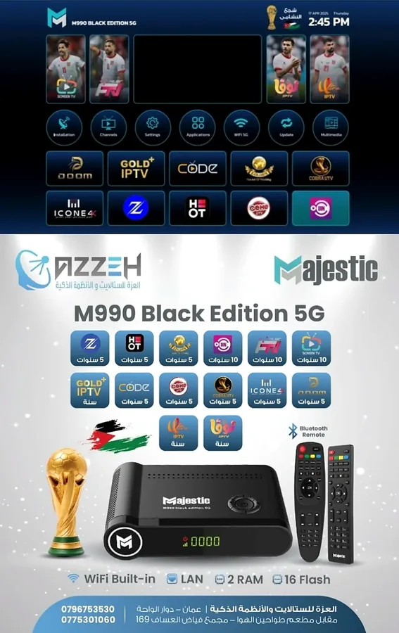
إصدار أسود يدعم WiFi 5G ومجموعة تطبيقات IPTV.
Black Edition · 5G
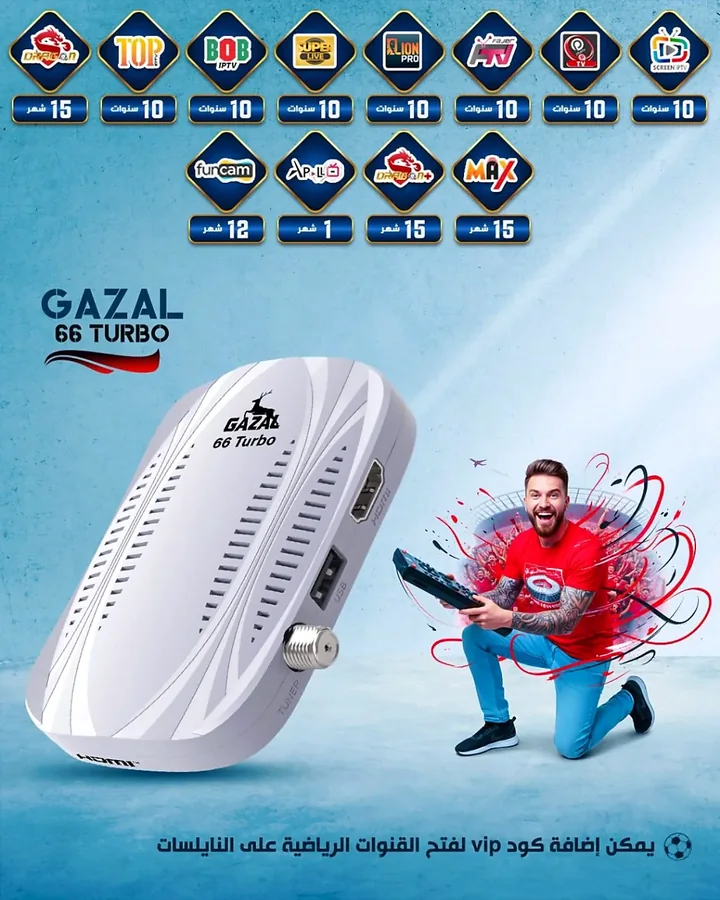
جهاز صغير عملي مع إمكانية إضافة كود VIP للقنوات الرياضية.
Mini · HDMI · USB
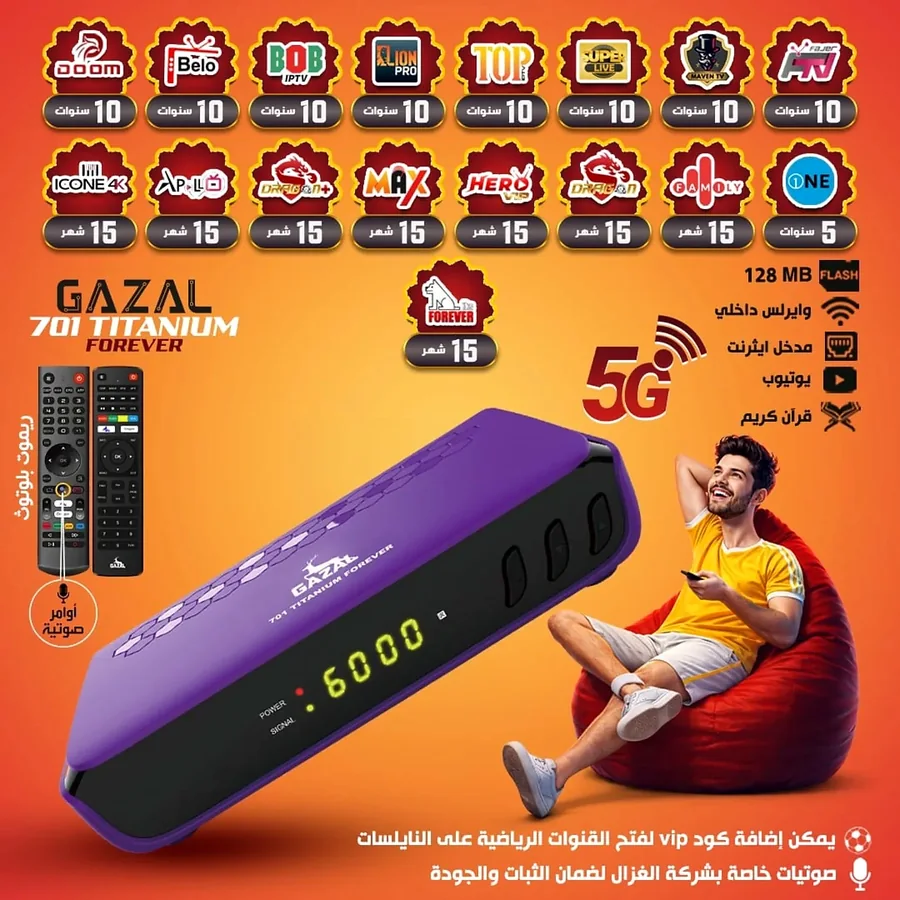
رسيفر 5G بوايرلس داخلي ومدخل إنترنت ويوتيوب وريموت بلوتوث.
5G · YouTube · Forever
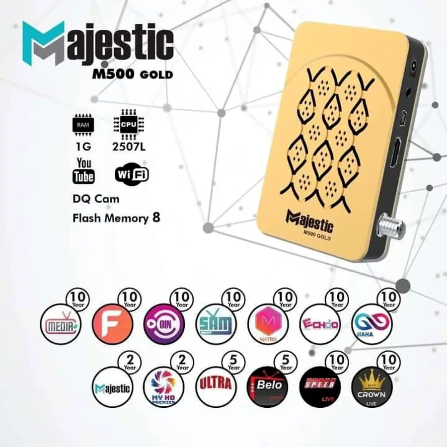
رسيفر Majestic ذهبي عملي مع WiFi ويوتيوب وDQ Cam.
WiFi · YouTube · DQ Cam
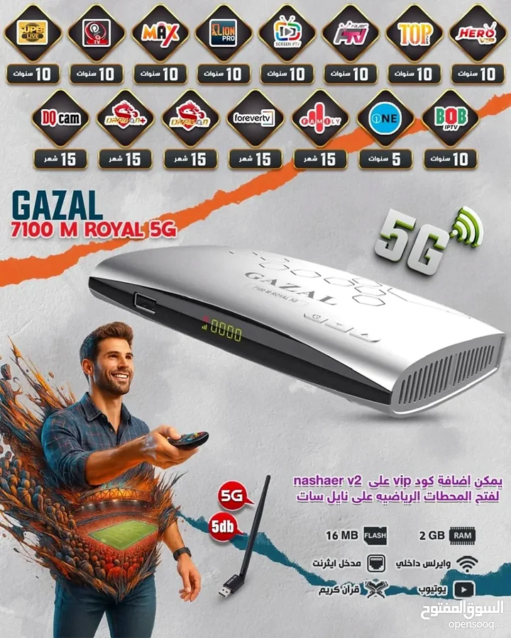
رسيفر Gazal Royal 5G بخدمات متعددة ووايرلس داخلي.
5G · WiFi · IPTV
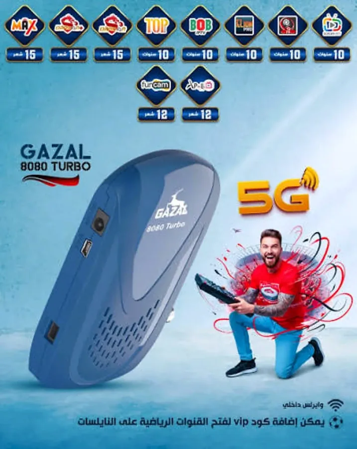
رسيفر Gazal 8080 Turbo 5G عملي مع وايرلس داخلي.
5G · WiFi · Turbo
نخدمكم بالفحيص وعمان الغربية والسلط والسرو
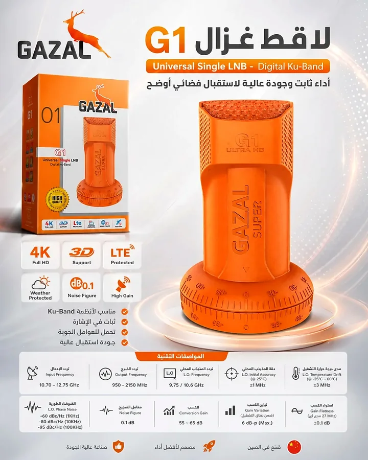
Universal Single LNB - Digital Ku-Band لأداء ثابت وجودة عالية في استقبال الإشارة.
مخرج واحد · Ku-Band · 4K · LTE Protected
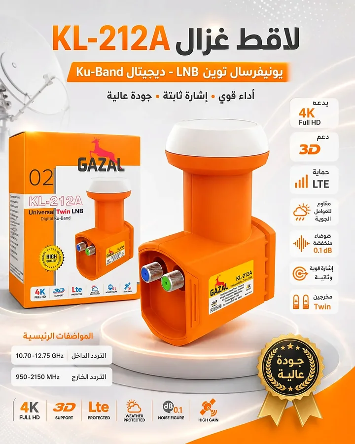
Universal Twin LNB بمخرجين لإشارة ثابتة وجودة عالية.
مخرجين Twin · Ku-Band · 4K · High Gain
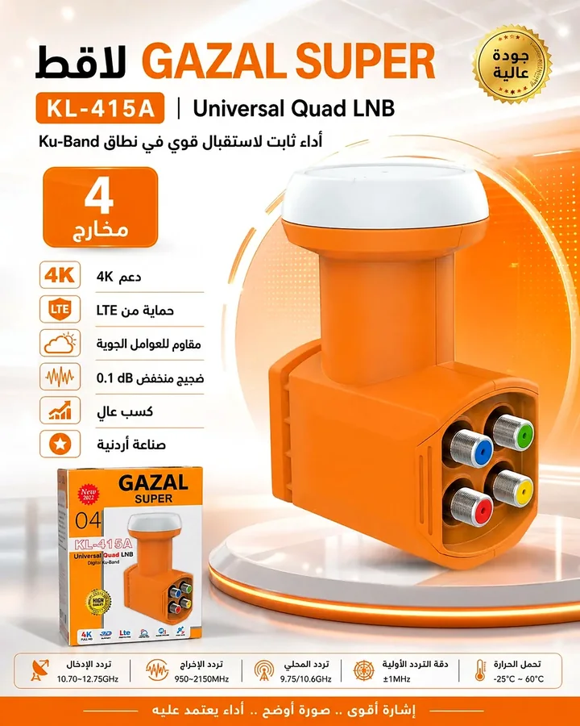
Universal Quad LNB بأربعة مخارج لاستقبال قوي وثابت.
4 مخارج · Ku-Band · LTE · صناعة أردنية
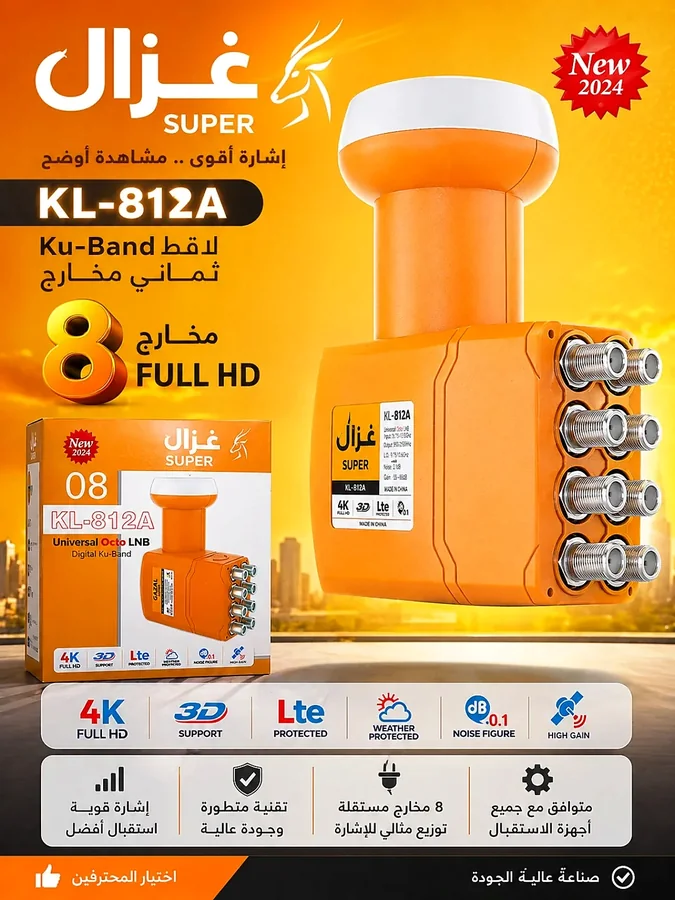
Universal Octo LNB بثمانية مخارج لتوزيع الإشارة على عدة أجهزة.
8 مخارج · Full HD · 4K · توزيع مثالي
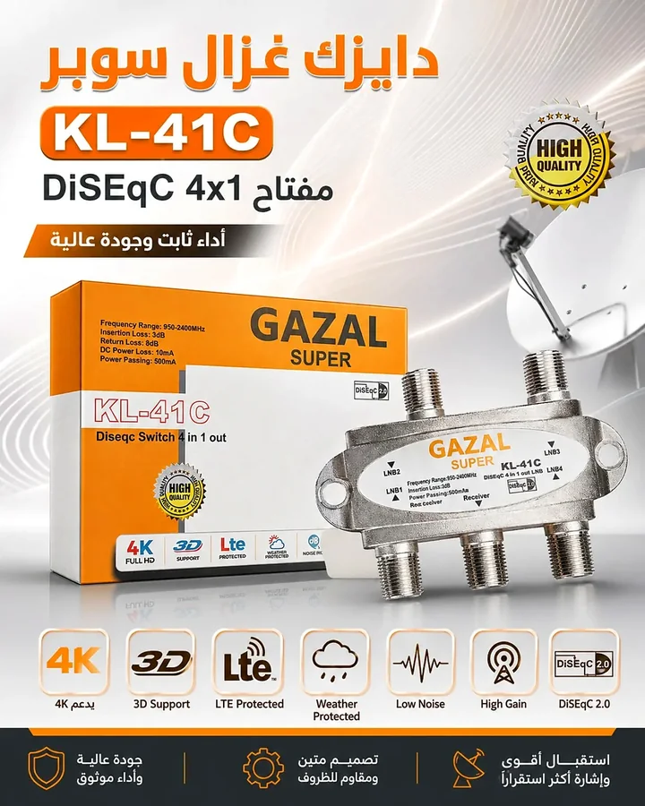
مفتاح DiSEqC 4x1 بجودة عالية لتبديل الإشارة بين عدة لواقط.
DiSEqC 4x1 · 4K · LTE Protected · High Gain
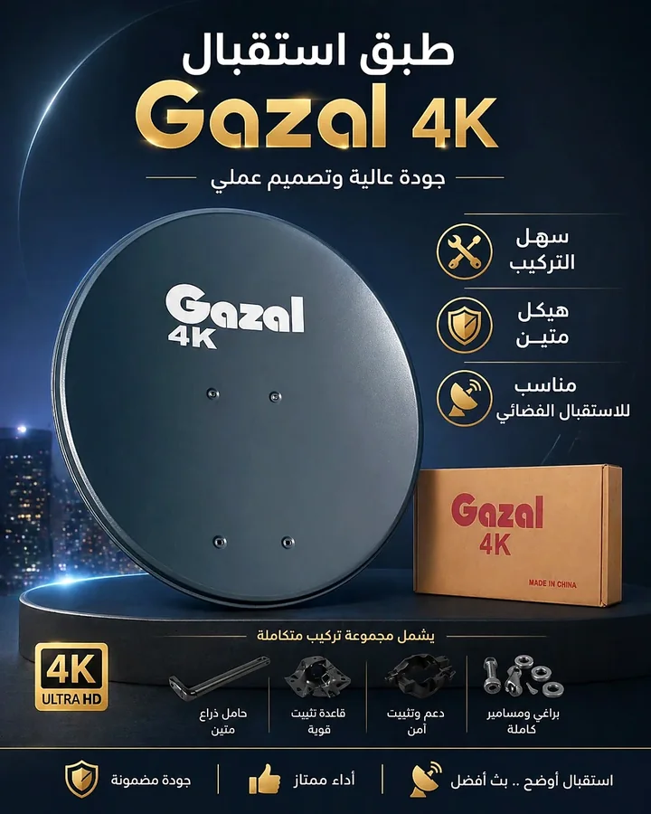
طبق استقبال 4K بجودة عالية وتصميم عملي مناسب للاستقبال الفضائي.
طبق 4K · سهل التركيب · هيكل متين · طقم كامل
نخدمكم بالفحيص وعمان الغربية والسلط والسرو
نقدّم خدمات تركيب وصيانة وبرمجة أنظمة الستلايت، ضبط الإشارة، تركيب اللواقط، فحص التمديدات، وتجهيز الرسيفرات حسب الحاجة.
نقدم خدمة ميدانية لتركيب وصيانة أنظمة الستلايت والرسيفرات، ضبط الإشارة، تركيب الأطباق واللواقط، فحص الأعطال، تبديل القطع المناسبة، وترتيب القنوات حسب طلب الزبون.
يمكننا تقديم خدمة التركيب والصيانة في المناطق التالية:
أسئلة شائعة
إجابات مختصرة تساعد الزبون قبل التواصل معنا.
نعم، نقدم خدمات بيع وصيانة وتركيب وبرمجة أنظمة الستلايت طوال أيام الأسبوع والأعياد حسب التوفر والموعد.
نعم، نخدم عمان الغربية بجميع مناطقها، بالإضافة إلى الفحيص ودابوق والحمر والسرو وصويلح ومرج الحمام.
نعم، يمكن فحص الإشارة، اتجاه الطبق، اللواقط، التمديدات، والدايزك لمعرفة سبب المشكلة.
نعم، اضغط على زر واتساب الخاص بالمنتج، وستظهر رسالة جاهزة باسم المنتج المطلوب.
نخدمكم بالفحيص وعمان الغربية والسلط والسرو
من أعمالنا
صور حقيقية من أعمال التركيب والصيانة، تركيب أطباق الستلايت، ضبط اللواقط، ترتيب التمديدات، وتجهيز نقاط التوزيع. اضغط على أي صورة لتكبيرها.
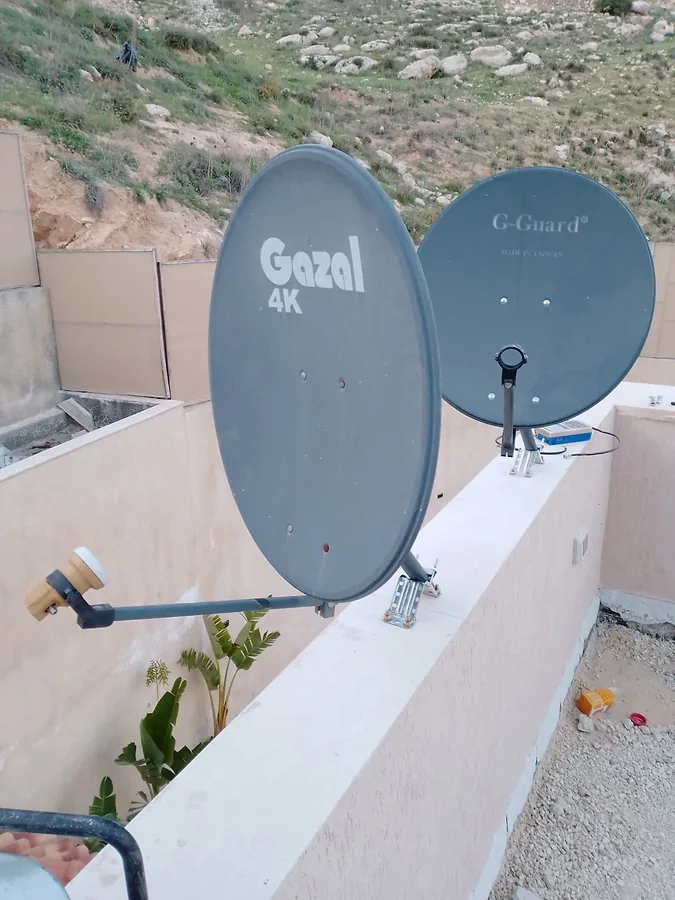
تركيب طبقين ستلايت على السور الخارجي مع تثبيت احترافي وضبط اتجاه الإشارة.
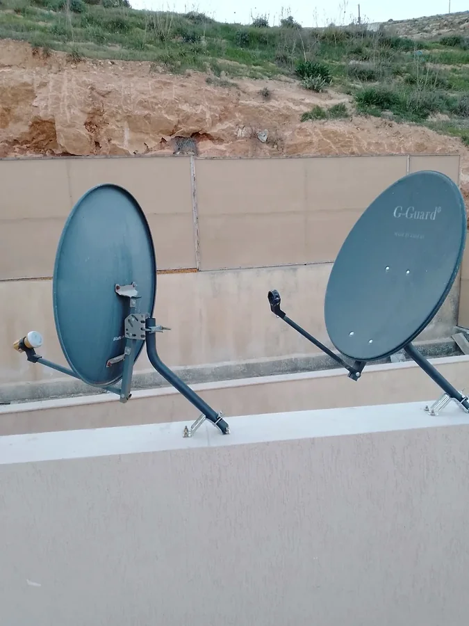
تنفيذ عملي لتركيب طبقين ستلايت مع مخرجات جاهزة وتمديدات مرتبة.
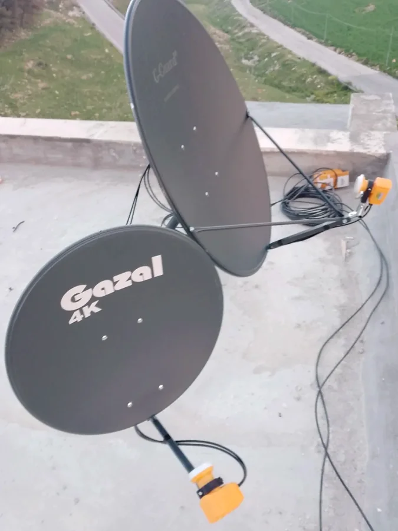
من أعمالنا في تثبيت الأطباق وضبط اللواقط على أسطح المباني.
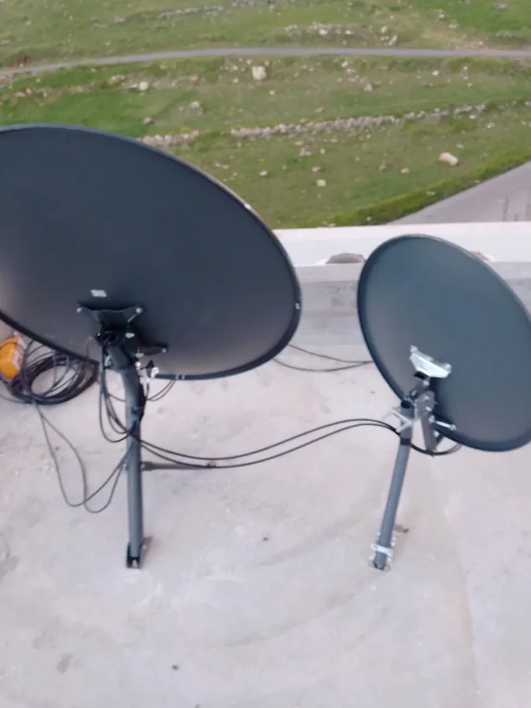
تنسيق أكثر من طبق ستلايت مع مراعاة زاوية الالتقاط وثبات التركيب.
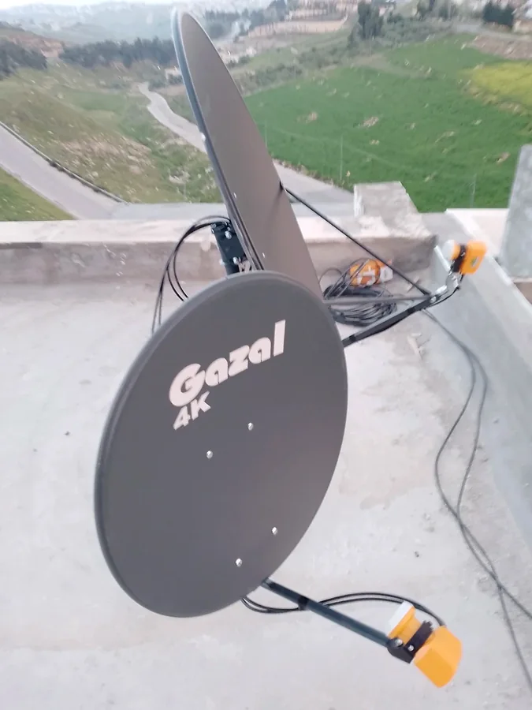
تركيب طبقين ستلايت مع تنظيم الكوابل وتجهيز نقطة التوزيع.
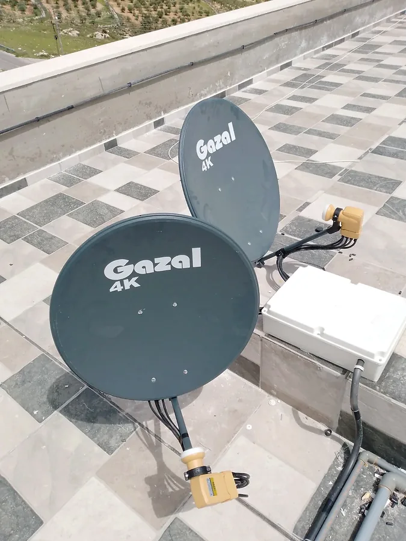
تجهيز نظام ستلايت مزدوج مع علبة توزيع وترتيب التوصيلات بشكل آمن.
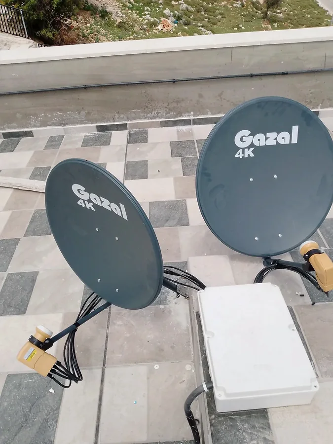
تنفيذ عملي آخر لتركيب الأطباق مع تثبيت قوي وتمديدات منظمة.
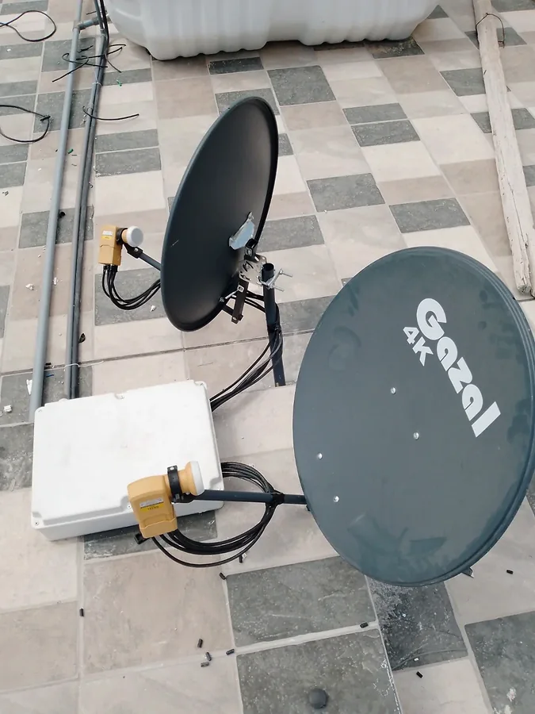
لقطة إضافية من أعمالنا في تركيب الأطباق وربطها مع صندوق التوزيع.
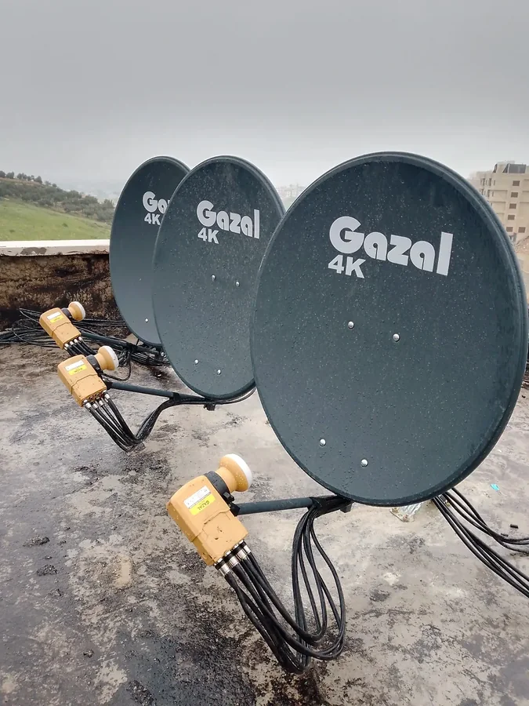
من أعمالنا في تركيب عدة أطباق ستلايت مع لواقط متعددة المخارج.
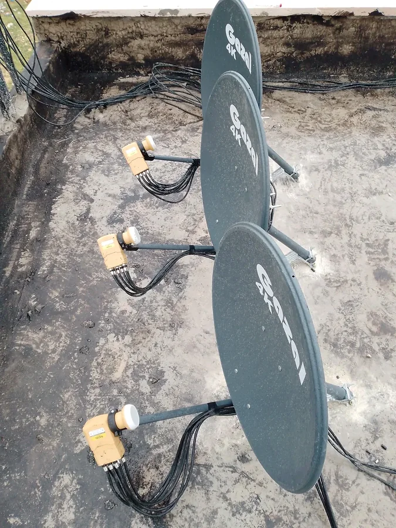
تنفيذ ميداني لتركيب ثلاثة أطباق ستلايت مع تمديدات مرتبة ومثبتة جيداً.
نخدمكم بالفحيص وعمان الغربية والسلط والسرو
معن حنونة للستلايت
بيع وصيانة وتركيب وبرمجة جميع أنظمة الستلايت طوال أيام الأسبوع والأعياد
رابط مباشر لموقع Spider الرسمي لاختيار موديل الرسيفر وتحميل ملف التحديث المناسب.
مكتبة Gazal الرسمية للوصول إلى تحديثات الأجهزة وملفات الرسيفرات المتاحة من الشركة.
رابط مباشر لموقع Infinity SAT الرسمي لمراجعة التحديثات والملفات الخاصة بالأجهزة.
نخدمكم بالفحيص وعمان الغربية والسلط والسرو
معن حنونة للستلايت
بيع وصيانة وتركيب وبرمجة جميع أنظمة الستلايت طوال أيام الأسبوع والأعياد
ترددات القنوات
| القمر | الساتلايت / المدار | التردد MHz | الاستقطاب | SR | FEC | النظام | أسماء المحطات داخل التردد |
|---|
من أرض الحضارة إلى مسرح العالم — تابع مشوار النشامى، نتائج البطولة، المجموعات، وأحلى لحظات كأس العالم 2026 بتوقيت الأردن.
نخدمكم بالفحيص وعمان الغربية والسلط والسرو
تواصل معنا
اختر الطريقة المناسبة لك: واتساب للاستفسار السريع، اتصال مباشر، فيس بوك، أو إيميل.